Maak kennis met ons team
Veertien collega’s, één doel: persoonlijke aandacht en vertrouwde zorg voor uw gebit. Bij ons ziet u vertrouwde gezichten, van de balie tot de behandelstoel.
14collega’s, van tandarts tot tandtechnieker
Tandartsen
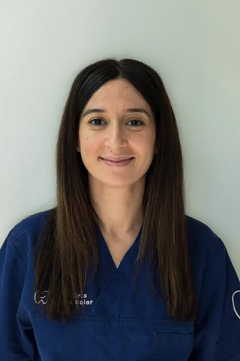
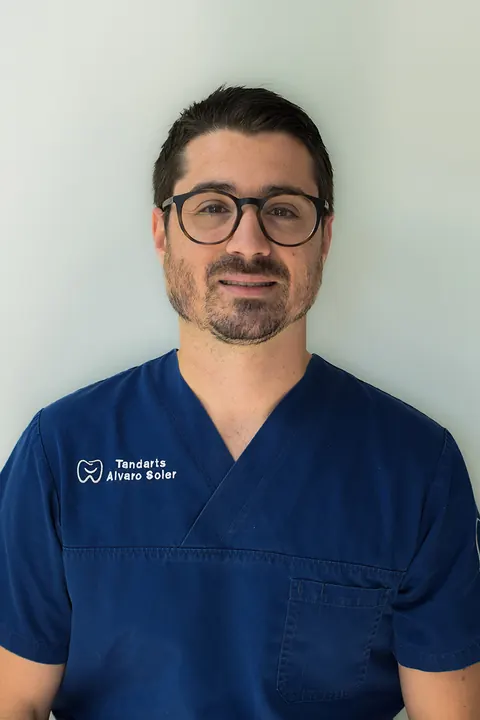

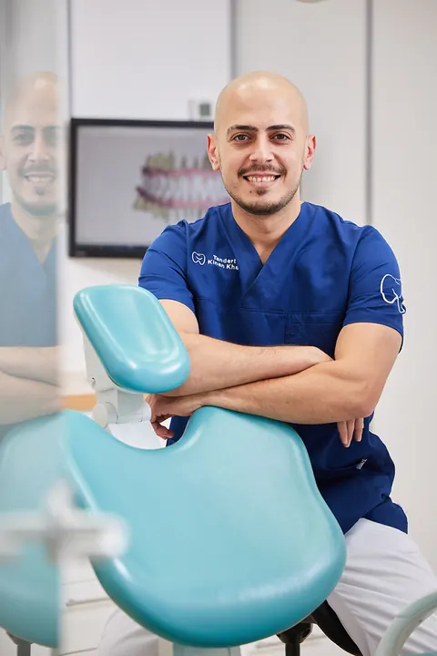
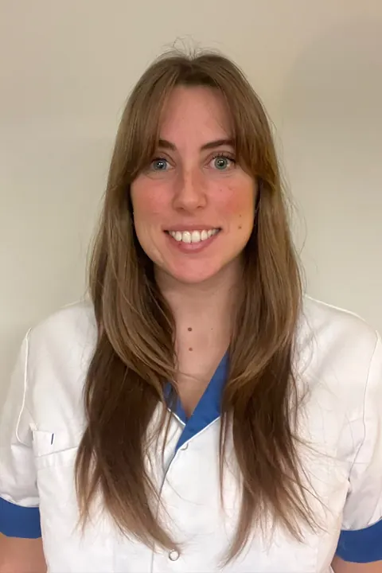
Preventie en assistentie
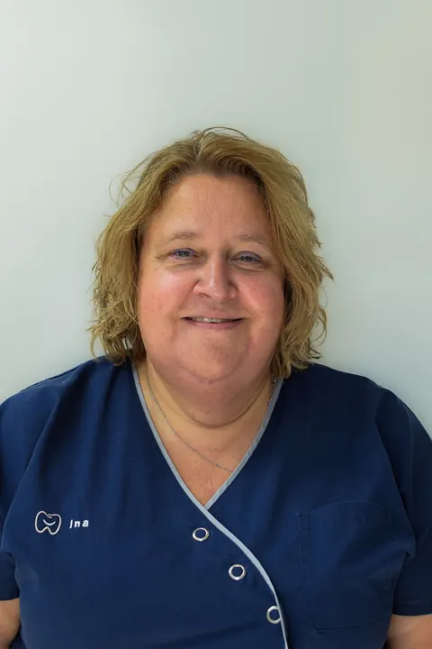
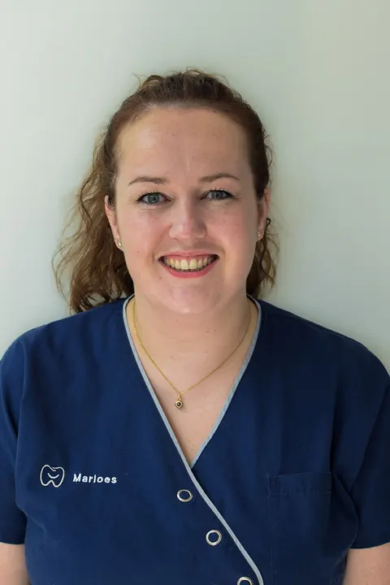
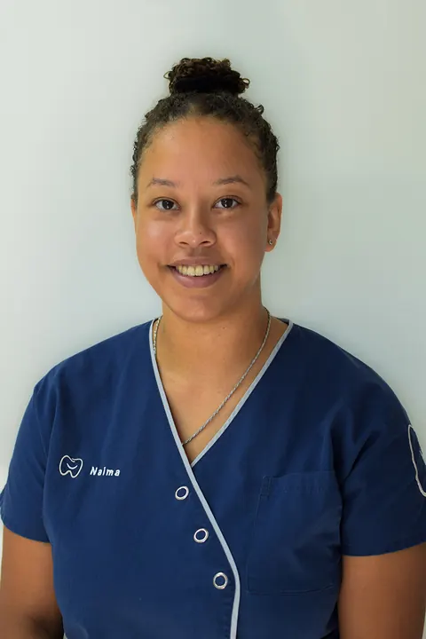
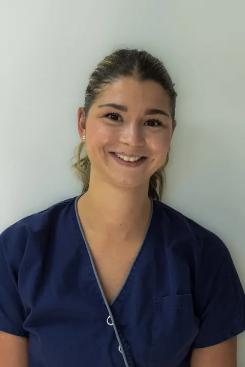
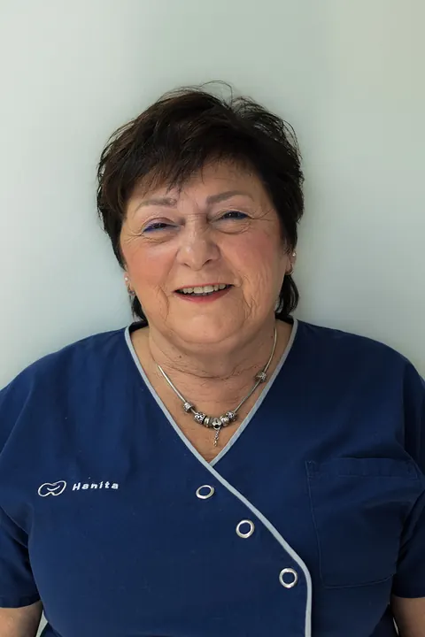
Prothetiek en tandtechniek
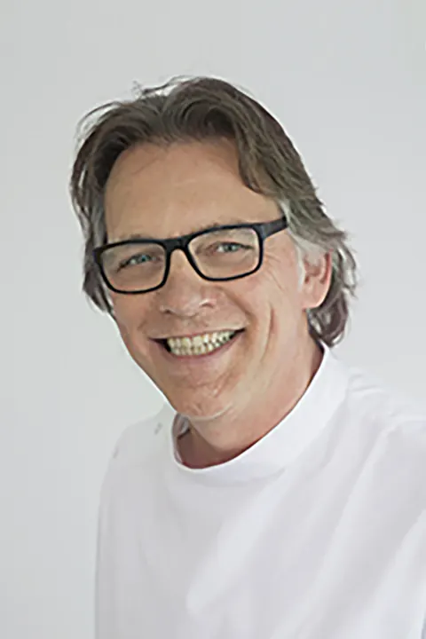
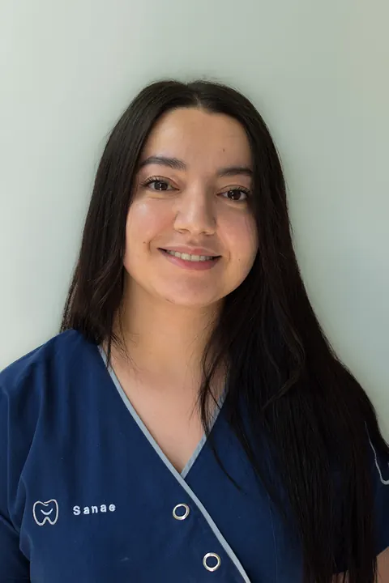

Praktijkmanagement
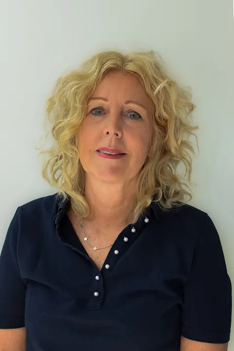
Werken bij Slotplantsoen? We zoeken regelmatig nieuwe collega’s. Bekijk de vacatures.
Klaar voor een gezonde glimlach?
Bel ons, vraag online een afspraak aan of schrijf u in als nieuwe patiënt. We nemen weer nieuwe patiënten aan.